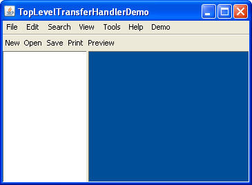

Hasta ahora, nos hemos centrado principalmente en adjuntar un TransferHandler a una de las
subclases de JComponent. Pero también puede establecer un TransferHandler
directamente en el contenedor de más arriba, tal como JFrame y JDialog.
Esto es particularmente útil para aplicaciones que importan ficheros, tales como editores, EIDs, programas de manipulación de imagenes, programas de grabación de CD. Tales aplicaciones generalmente incluyen un menú, una barra de herramientas, un área para editar documentos, y probablemente una lista o mecanismos para cambiar entre documentos abiertos.
Tenemos un ejemplo de este tipo pero debido a que esta demostración lee archivos, no proporcionamos una versión de Java Web Start — tendrá que descargar y compilar la demostración usted mismo.
Como puede ver en la captura de pantalla de abajo, TopLevelTransferHandlerDemo tiene un menú
(vacío, excepto para el submenú Demo), una barra de herramientas (no funcional), un área (a la izquierda) que
muestra una lista de documentos abiertos, y un área (a la derecha) que muestra el contenido de cada documento
abierto. En el arranque el área del documento azul tiene asignado un manejador de transferencias que soporta la
importación de ficheros — así que es el único lugar que puede aceptar un soltado.

TopLevelTransferHandlerDemo, consulte el
índice de ejemplos si le gustase
descargar un fichero zip estructurado para NetBeans.
JDesktopPane, contiene un manejador de transferencias que soporta la importación de
javaFileListFlavor.
JFrame.
JList o del área de texto no saben como importar ficheros.
Tenga en cuenta un efecto secundario no deseado de deshabilitar el controlador de transferencia predeterminado
en el componente de texto: Ya no puede arrastrar y soltar (o cortar / copiar / pegar) texto dentro del área de
edición. Para arreglar esto, necesitará implementar un controlador de transferencia personalizado para el
componente de texto que acepte sueltas de fichero y que también reimplemente el soporte perdido para las
transferencias de texto. Podría querer ver
RFE 4830695 el cual le permitiría
agregar la importación de datos encima de un TransferHandler existente.
Aquí está el código fuente para
TopLevelTransferHandlerDemo.java
:
/**
* Demonstration of the top-level {@code TransferHandler}
* support on {@code JFrame}.
*/
public class TopLevelTransferHandlerDemo extends JFrame {
private static boolean DEMO = false;
private JDesktopPane dp = new JDesktopPane();
private DefaultListModel listModel = new DefaultListModel();
private JList list = new JList(listModel);
private static int left;
private static int top;
private JCheckBoxMenuItem copyItem;
private JCheckBoxMenuItem nullItem;
private JCheckBoxMenuItem thItem;
private class Doc extends InternalFrameAdapter implements ActionListener {
String name;
JInternalFrame frame;
TransferHandler th;
JTextArea area;
public Doc(File file) {
this.name = file.getName();
try {
init(file.toURI().toURL());
} catch (MalformedURLException e) {
e.printStackTrace();
}
}
public Doc(String name) {
this.name = name;
init(getClass().getResource(name));
}
private void init(URL url) {
frame = new JInternalFrame(name);
frame.addInternalFrameListener(this);
listModel.add(listModel.size(), this);
area = new JTextArea();
area.setMargin(new Insets(5, 5, 5, 5));
try {
BufferedReader reader = new BufferedReader(new InputStreamReader(url.openStream()));
String in;
while ((in = reader.readLine()) != null) {
area.append(in);
area.append("\n");
}
reader.close();
} catch (Exception e) {
e.printStackTrace();
return;
}
th = area.getTransferHandler();
area.setFont(new Font("monospaced", Font.PLAIN, 12));
area.setCaretPosition(0);
area.setDragEnabled(true);
area.setDropMode(DropMode.INSERT);
frame.getContentPane().add(new JScrollPane(area));
dp.add(frame);
frame.show();
if (DEMO) {
frame.setSize(300, 200);
} else {
frame.setSize(400, 300);
}
frame.setResizable(true);
frame.setClosable(true);
frame.setIconifiable(true);
frame.setMaximizable(true);
frame.setLocation(left, top);
incr();
SwingUtilities.invokeLater(new Runnable() {
public void run() {
select();
}
});
nullItem.addActionListener(this);
setNullTH();
}
public void internalFrameClosing(InternalFrameEvent event) {
listModel.removeElement(this);
nullItem.removeActionListener(this);
}
public void internalFrameOpened(InternalFrameEvent event) {
int index = listModel.indexOf(this);
list.getSelectionModel().setSelectionInterval(index, index);
}
public void internalFrameActivated(InternalFrameEvent event) {
int index = listModel.indexOf(this);
list.getSelectionModel().setSelectionInterval(index, index);
}
public String toString() {
return name;
}
public void select() {
try {
frame.toFront();
frame.setSelected(true);
} catch (java.beans.PropertyVetoException e) {}
}
public void actionPerformed(ActionEvent ae) {
setNullTH();
}
public void setNullTH() {
if (nullItem.isSelected()) {
area.setTransferHandler(null);
} else {
area.setTransferHandler(th);
}
}
}
private TransferHandler handler = new TransferHandler() {
public boolean canImport(TransferHandler.TransferSupport support) {
if (!support.isDataFlavorSupported(DataFlavor.javaFileListFlavor)) {
return false;
}
if (copyItem.isSelected()) {
boolean copySupported = (COPY & support.getSourceDropActions()) == COPY;
if (!copySupported) {
return false;
}
support.setDropAction(COPY);
}
return true;
}
public boolean importData(TransferHandler.TransferSupport support) {
if (!canImport(support)) {
return false;
}
Transferable t = support.getTransferable();
try {
java.util.List<File> l =
(java.util.List<File>)t.getTransferData(DataFlavor.javaFileListFlavor);
for (File f : l) {
new Doc(f);
}
} catch (UnsupportedFlavorException e) {
return false;
} catch (IOException e) {
return false;
}
return true;
}
};
private static void incr() {
left += 30;
top += 30;
if (top == 150) {
top = 0;
}
}
public TopLevelTransferHandlerDemo() {
super("TopLevelTransferHandlerDemo");
setJMenuBar(createDummyMenuBar());
getContentPane().add(createDummyToolBar(), BorderLayout.NORTH);
JSplitPane sp = new JSplitPane(JSplitPane.HORIZONTAL_SPLIT, list, dp);
sp.setDividerLocation(120);
getContentPane().add(sp);
//new Doc("sample.txt");
//new Doc("sample.txt");
//new Doc("sample.txt");
list.getSelectionModel().setSelectionMode(ListSelectionModel.SINGLE_SELECTION);
list.addListSelectionListener(new ListSelectionListener() {
public void valueChanged(ListSelectionEvent e) {
if (e.getValueIsAdjusting()) {
return;
}
Doc val = (Doc)list.getSelectedValue();
if (val != null) {
val.select();
}
}
});
final TransferHandler th = list.getTransferHandler();
nullItem.addActionListener(new ActionListener() {
public void actionPerformed(ActionEvent ae) {
if (nullItem.isSelected()) {
list.setTransferHandler(null);
} else {
list.setTransferHandler(th);
}
}
});
thItem.addActionListener(new ActionListener() {
public void actionPerformed(ActionEvent ae) {
if (thItem.isSelected()) {
setTransferHandler(handler);
} else {
setTransferHandler(null);
}
}
});
dp.setTransferHandler(handler);
}
private static void createAndShowGUI(String[] args) {
try {
UIManager.setLookAndFeel(UIManager.getSystemLookAndFeelClassName());
} catch (Exception e) {
}
TopLevelTransferHandlerDemo test = new TopLevelTransferHandlerDemo();
test.setDefaultCloseOperation(JFrame.EXIT_ON_CLOSE);
if (DEMO) {
test.setSize(493, 307);
} else {
test.setSize(800, 600);
}
test.setLocationRelativeTo(null);
test.setVisible(true);
test.list.requestFocus();
}
public static void main(final String[] args) {
SwingUtilities.invokeLater(new Runnable() {
public void run() {
//Turn off metal's use of bold fonts
UIManager.put("swing.boldMetal", Boolean.FALSE);
createAndShowGUI(args);
}
});
}
private JToolBar createDummyToolBar() {
JToolBar tb = new JToolBar();
JButton b;
b = new JButton("New");
b.setRequestFocusEnabled(false);
tb.add(b);
b = new JButton("Open");
b.setRequestFocusEnabled(false);
tb.add(b);
b = new JButton("Save");
b.setRequestFocusEnabled(false);
tb.add(b);
b = new JButton("Print");
b.setRequestFocusEnabled(false);
tb.add(b);
b = new JButton("Preview");
b.setRequestFocusEnabled(false);
tb.add(b);
tb.setFloatable(false);
return tb;
}
private JMenuBar createDummyMenuBar() {
JMenuBar mb = new JMenuBar();
mb.add(createDummyMenu("File"));
mb.add(createDummyMenu("Edit"));
mb.add(createDummyMenu("Search"));
mb.add(createDummyMenu("View"));
mb.add(createDummyMenu("Tools"));
mb.add(createDummyMenu("Help"));
JMenu demo = new JMenu("Demo");
demo.setMnemonic(KeyEvent.VK_D);
mb.add(demo);
thItem = new JCheckBoxMenuItem("Use Top-Level TransferHandler");
thItem.setMnemonic(KeyEvent.VK_T);
demo.add(thItem);
nullItem = new JCheckBoxMenuItem("Remove TransferHandler from List and Text");
nullItem.setMnemonic(KeyEvent.VK_R);
demo.add(nullItem);
copyItem = new JCheckBoxMenuItem("Use COPY Action");
copyItem.setMnemonic(KeyEvent.VK_C);
demo.add(copyItem);
return mb;
}
private JMenu createDummyMenu(String str) {
JMenu menu = new JMenu(str);
JMenuItem item = new JMenuItem("[Empty]");
item.setEnabled(false);
menu.add(item);
return menu;
}
}